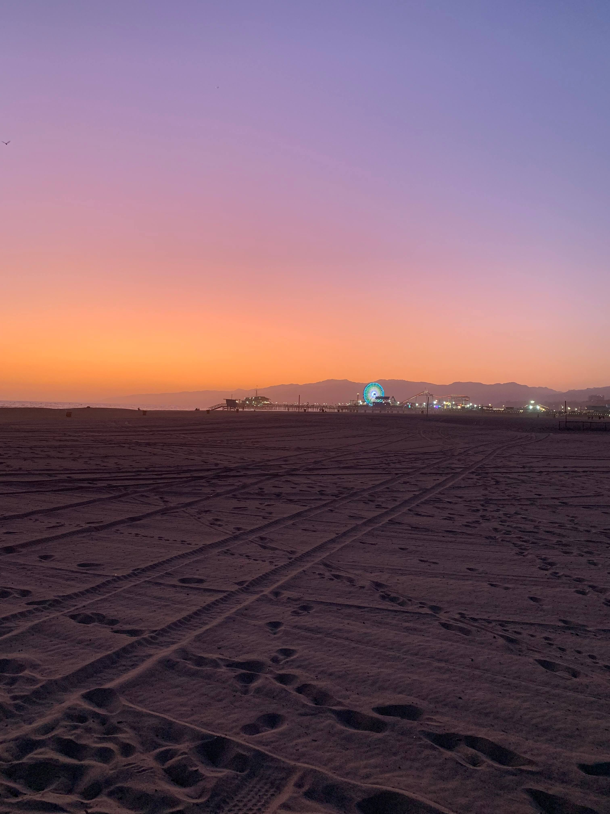

Game Design
Tuesday, February 23 - Week 8
This article had good points, especially about how to use and maximize screen space, which seems very relevant for mobile app designs. The actions that you as the app designer want the user to interact with should be within an easy reaching distance or have greater emphasis on the screen. I found it interesting that on user pop-ups, the decisions that are desirable are placed on the right side of the pop-up, yet on the illustration under “UI Positions”, the more comfortable part of the screen to reach is the left side (on the portrait illustration). However, to me, it does feel more natural to select a positive or affirmative action on the right side of a popup or dialog.
Visual Thinking Analysis #2
Thursday, February 11 - Week 6
 Cathy Tang, 2021
Cathy Tang, 2021
This image that Cathy took depicts some plants she found on a beach. What is especially interesting about this image is the various colors, textures, and shapes of the vegetation. I think the bush with the yellow flowers is what acts as a focal point for me. It takes on a rounder shape, in contrast to the blue-gray plant shooting up next to it. On the lower right and throughout the background is a small red-tipped succulent. In the foreground, the gradient on the body of the plant is more apparent, starting green near the ground and turning red at the tips. But at a further distance, these plants appear more generally as a blanket of red over the landscape. The most obvious aspect of this image is the subject matter. These are obviously plants, but I think the diversity among their structure and color is what prompts further exploration into the details of this image. This image could do really well with a magnification effect.
Visual Thinking Analysis #1
Thursday, February 11 - Week 6

Brooke Bahn, 2019
I think this image is interesting because it has really great color. The sky's gradient ranges from a blue-violet to a yellow-orange. The image is bisected nicely by the horizon line, and the sand in the bottom half of the picture is textured subtly with tire tracks and footsteps. The lights along the pier draw attention to the horizon, and the blue lights on the ferris wheel introduce a new color to the picture.
This fits well with my collection because my archive is about my 2019 summer vacation. I took this picture in early September, before school resumed, when I went to LA and visited Santa Monica. The images in my collection are sentimental to me because I travelled with my friend all over California this summer. Because my parents live in two different cities far away from each other in California, I tend to move around a lot. Doing all that travelling exhausts me sometimes, because it basically means living out of a duffle bag and nowhere really feels like home. But over this summer I really enjoyed that nomadic lifestyle and I made a lot of great memories.
Images
Thursday, February 4 - Week 5
I chose to analyze the Foam Talent website, which presents itself like a photography gallery for young artists. I especially liked the way this website bridged the gap between a web experience and a physical exhibit. To scroll between the different artists on display, each gallery has been augmented into (an impression of) 3D space. When viewing each artist’s exhibition, the images scroll across the screen horizontally, giving the feeling of moving along a wall of photographs. The design brings a sense of depth by overlapping elements and photographs occasionally. Throughout the exhibitions are videos moving along the “wall”, of the artist’s work or of pieces in the artist’s gallery. There’s also an option to play an audio recording from the artist speaking about their work, which continues to feel like a gallery exhibit, and adds life to the experience.
Modals
Thursday, January 28 - Week 4
I thought it was interesting to see examples of modals that were not used as pop-ups or spam, and instead for main functionality, like logins, or creating tweets. I hadn’t even thought of these as modals, because I think I formed an inherent association with modals and being annoying or irrelevant. It made me reconsider how to tastefully use modals, especially with consideration to back-tracking and escaping. I think being able to easily escape a modal is important visually, as denoted by an ‘x’ or a similar symbol, and also for users that navigate by keyboard to be able to escape quickly by the ‘esc’ button. Otherwise, I think a modal can probably feel claustrophobic. And as with any aspect design, I think it also applies that when everything is emphasized, nothing is emphasized. Modals should be used sparingly to have the desired effect.
Form Design
Thursday, January 21 - Week 3
From a usability perspective, forms seem to be an inherent nightmare. Based on the sheer length of this article, there are clearly a lot of ways that forms can be suboptimal for the user experience. I feel that a lot of these practices pertain to either communicating functionality and error handling to users, or creating an appealing, manageable flow. I often feel frustrated with form design on the internet, so I thought all of this information was really valuable to me as a designer. My primary goal for my form designs is to best integrate the accessibility features, such as tab navigation, and other more general practices like adequate contrast and the use of more than just color to communicate statuses.